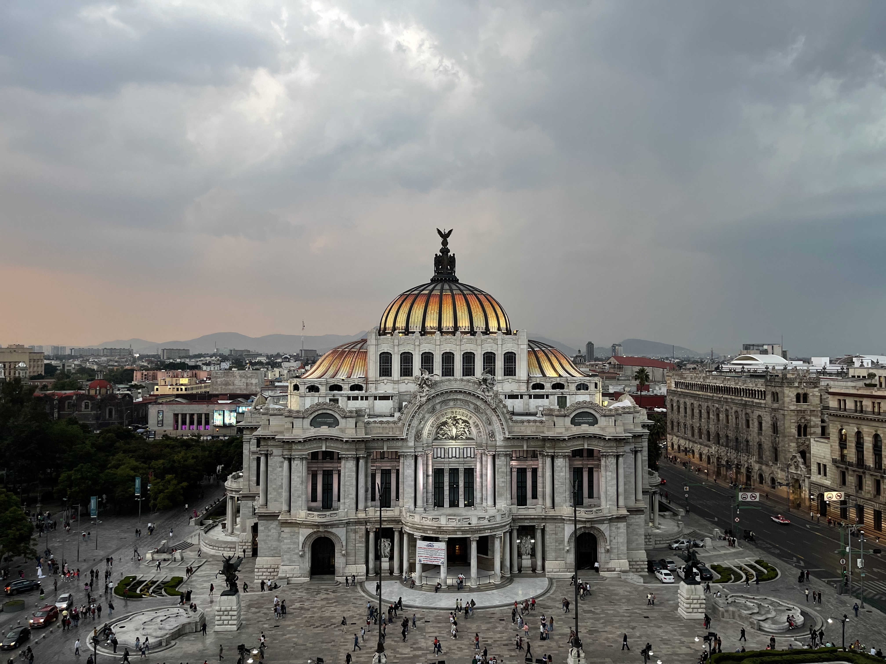

1. Xochimilco

Xochimilco is really special place in Mexico. Ii takes around 2 hours from Mexico City. But you can go there by public transportation such as metro or autobus. You can see the Mexicans who celebrating the family or friends's birthday when you go there. You can borrow the boat called Trajinera if you pay 2000 pesos for 4 hours.
2. Cancun
Cancun is as famous as a honeymoon spot. Every stores are well-managed and you can pay in dollors. If you look at Cancun's emerald sea, you will fall in love with it.
3. Teotihuacan

Teotihuacan is historical place. It is a pyramid used by the ancient Aztecs for ancestral rites. It is the second largest pyramid in the world. This place is not that far away from the capital of Mexico. It only takes an hour half by a coach.
3. Taxco

If you're not a guy with a plan, I highly recommed Taxco. Because you can finish all the city tours in one day. The city is colourful and the residents are very kind. This city was famous because of a silver mine. So you can get a silver accessory with reasonable price.
4. Palacio de Bellas Artes
Are you looking for a place for the Instagram? Then 'Palacio de Bellas Artes' is the perfect spot. You can get the picture of Insta-worthy when you go the cafe, called Finca Don Porfirio. But, you have to queue for around 30 minutes.